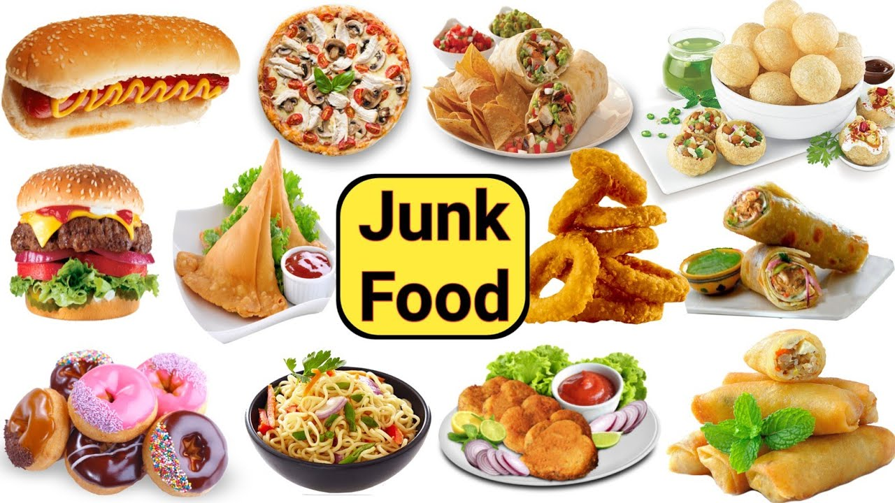

Unhealthy foods

Do you know what foods are unhealthy? When examining your diet, it can be difficult to determine what foods are healthy or not.
The most common unhealthy foods include highly-processed items “such as fast foods and snack foods,”says Vilma Andari, M.S. “Highly-processed foods tend to be low in nutrients (vitamins, minerals and antioxidants) and high on empty calories due to the content of refined flours, sodium and sugar.”
- Examples of processed foods include:
- Chips
- Cookies
- Cakes
- Sugar cereals
What makes food unhealthy?
“The preparation method and the types of ingredients the food contains make it unhealthy,” says Andari. “Sodium, sugar and fat (saturated fat and trans-fat) are key ingredients one should always monitor when eating out and shopping at the grocery store. The American Heart Association recommends keeping the consumption of saturated fat to less than 7 percent and the consumption of trans-fat to less than 1 percent of an individual’s daily calories.”
Avoid sodium, added sugar
According to the American Heart Association’s 2013 heart disease prevention guidelines, women are smart to shy awayfrom eating foods that contain high levels of sodium and added sugar.
- No more than 1,500 milligrams of sodium per day.
- No more than 6 teaspoons or 100 calories of sugar a day for women. Next